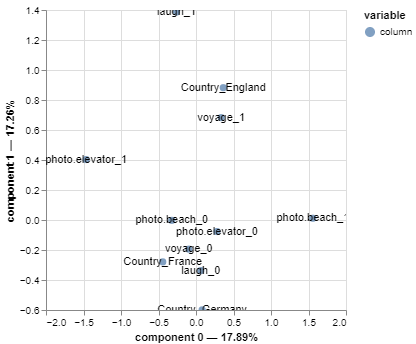

🇫🇷 Visualisations du projet
Cette page regroupe les graphiques générés pour l’analyse du jeu de données Tinder.
🇬🇧 Project Visualisations
This page displays the plots generated for the Tinder dataset analysis.

Cette page regroupe les graphiques générés pour l’analyse du jeu de données Tinder.
This page displays the plots generated for the Tinder dataset analysis.
